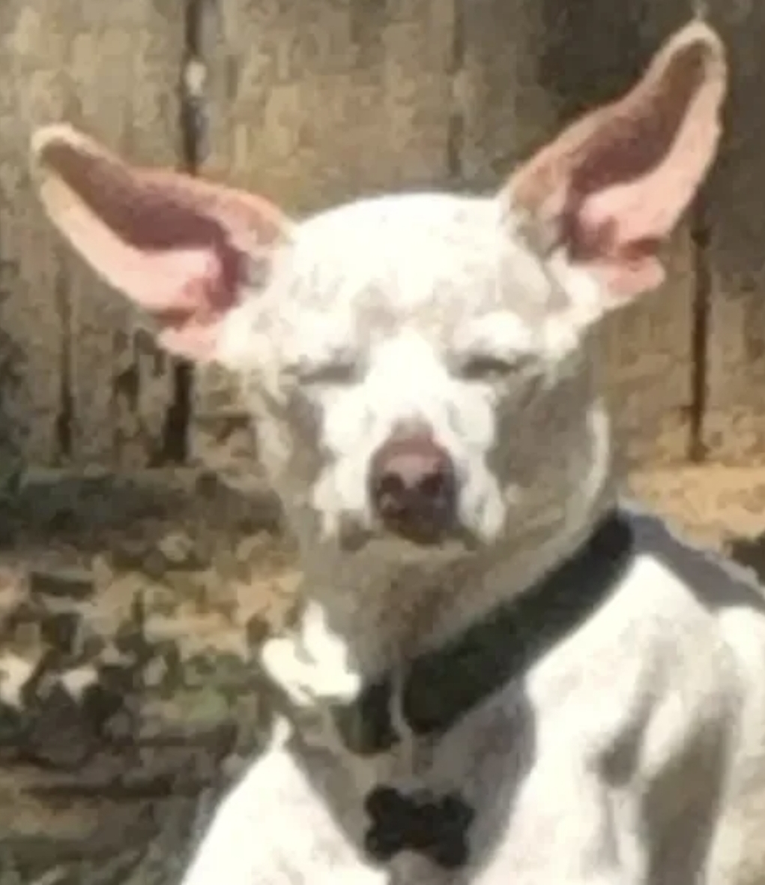

Transit, Noble Coyote Coffee, First-Activity Auto Show & Noon Parade
| Time | Location | Activity & Tactical Plan | Environment / Notes |
|---|---|---|---|
| 7:55 – 8:15 AM | 2806 Sarah Dr | Depart Pantego; drive to CentrePort/DFW Airport Station[span_0](start_span)[span_0](end_span)[span_1](start_span)[span_1](end_span). Park in free commuter lot[span_2](start_span)[span_2](end_span). | Drive / Park |
| 8:15 – 8:28 AM | CentrePort Lot | Purchase regional day passes ($12 DART/TRE Regional) in GoPass app[span_3](start_span)[span_3](end_span). Walk to platform[span_4](start_span)[span_4](end_span). | GoPass Ready |
| 8:29 – 8:56 AM | TRE Eastbound | Board Eastbound TRE train; arrive at Victory Station at 8:56 AM[span_5](start_span)[span_5](end_span)[span_6](start_span)[span_6](end_span). | TRE Rail |
| 8:56 – 9:05 AM | Victory Station | Cross-platform transfer to DART Rail Green Line Southbound toward Buckner/Lawnview[span_7](start_span)[span_7](end_span)[span_8](start_span)[span_8](end_span)[span_9](start_span)[span_9](end_span). | DART Green Line |
| 9:05 – 9:23 AM | DART Rail | Green Line train to Fair Park Station platform on Parry Ave[span_10](start_span)[span_10](end_span)[span_11](start_span)[span_11](end_span)[span_12](start_span)[span_12](end_span). Deboard at 9:23 AM[span_13](start_span)[span_13](end_span). | Arrive 9:23 AM |
| 9:25 – 9:48 AM | Noble Coyote | Arrive 9:30 AM sharp at Noble Coyote Coffee Roasters (819 Exposition Ave). Savor pour-overs, iced espresso, and fresh pastries before entering the fair. | ★ Specialty Coffee ★ |
| 9:48 – 10:00 AM | Parry Ave Gate | Walk 300 ft back to Front Gate[span_14](start_span)[span_14](end_span)[span_15](start_span)[span_15](end_span). Scan digital admission, clear bag check, and enter right at 10:00 AM rope drop[span_16](start_span)[span_16](end_span)[span_17](start_span)[span_17](end_span)[span_18](start_span)[span_18](end_span)! | Gate Rope Drop |
| 10:00 – 11:00 AM | Auto & Centennial Bldgs | Texas Auto Show (First Activity - Full 60 Minutes)[span_19](start_span)[span_19](end_span)[span_20](start_span)[span_20](end_span)[span_21](start_span)[span_21](end_span): Enter the Automobile and Centennial Buildings right at opening to explore new truck line-ups, concept cars, and brand displays without midday crowds[span_22](start_span)[span_22](end_span)[span_23](start_span)[span_23](end_span). | 60-Min A/C Start |
| 11:00 – 11:25 AM | Esplanade / Big Tex | Stroll down the Esplanade, snap opening morning photo with Big Tex, load food and ride coupons at kiosks[span_24](start_span)[span_24](end_span)[span_25](start_span)[span_25](end_span). | Big Tex Photo |
| 11:25 – 11:45 AM | Chevy Park Plaza | Statewide Remodeling Pig Races (11:30 AM Heat): Sun at ~47° elevation[span_26](start_span)[span_26](end_span)[span_27](start_span)[span_27](end_span). Bleachers have accumulated minimal sensible heat; lowest thermal stress window of the day. | Outdoor Track |
| 11:45 – 12:40 PM | The Old Mill Patio | Opening Day Parade (12:00 PM Kickoff): Settle down on the shaded patio at Rousso’s Wine Garden at The Old Mill on Grand Ave[span_28](start_span)[span_28](end_span)[span_29](start_span)[span_29](end_span). Order Texas wine or frozen cocktails; watch marching bands & floats roll by right under Big Tex[span_30](start_span)[span_30](end_span)[span_31](start_span)[span_31](end_span)! | Wine Garden & Parade |
Creative Arts Butter Sculpture, Afternoon A/C Retreat & 4:00 PM Dogs[span_37](start_span)[span_37](end_span)[span_38](start_span)[span_38](end_span)
| Time | Location | Activity & Tactical Plan | Environment / Notes |
|---|---|---|---|
| 12:40 – 1:15 PM | Tower Bldg Food | Fair Food Lunch: Original Fletcher's Corny Dog and 2026 Big Tex Choice Award winners in the air-conditioned food court[span_44](start_span)[span_44](end_span)[span_45](start_span)[span_45](end_span). | Covered / Seated |
| 1:15 – 2:00 PM | Creative Arts Bldg | The Butter Sculpture & Cooking Demos: View the refrigerated Stars, Stripes, and Howdies Butter Sculpture, the "United We Can" canned-jar flag, and Cutco Kitchen cooking demo (1:30 PM)[span_46](start_span)[span_46](end_span)[span_47](start_span)[span_47](end_span)[span_48](start_span)[span_48](end_span). Escape the solar noon peak (1:18 PM CDT). | Indoor A/C Gem |
| 2:00 – 3:00 PM | Hall of State | Hall of State & Mundo Latino: Walk through 1936 Centennial murals, Unquiet Legacies, and the Día de los Muertos artisan exhibit in deep air-conditioning[span_49](start_span)[span_49](end_span)[span_50](start_span)[span_50](end_span). | Deep A/C Sanctuary |
| 3:00 – 3:45 PM | Go Texan Pavilion | Texas Beer & Wine Tasting: Browse Texas products, sample free Oak Farms chocolate milk, and grab a cold craft beer flight[span_51](start_span)[span_51](end_span)[span_52](start_span)[span_52](end_span)[span_53](start_span)[span_53](end_span). | A/C Beverage Break |
| 3:45 – 4:00 PM | Walk to Marine Sq | Short shaded walk from Go Texan Pavilion over to Marine Corps Square[span_54](start_span)[span_54](end_span)[span_55](start_span)[span_55](end_span). | Short Walk |
| 4:00 – 4:35 PM | Marine Corps Sq | All-Star Stunt Dog Show (4:00 PM Optimal Slot): Solar elevation drops to ~34°, slashing direct irradiance and crown radiation load[span_56](start_span)[span_56](end_span)[span_57](start_span)[span_57](end_span). Rescued dogs perform trick agility and high frisbee catches[span_58](start_span)[span_58](end_span). | Least Miserable Outdoor |
| 4:35 – 4:48 PM | Parry Ave Front Gate | Walk through the Esplanade back to the historic Parry Ave Gate; step directly onto the Fair Park DART Station platform[span_59](start_span)[span_59](end_span)[span_60](start_span)[span_60](end_span). | Platform Ready |
| 4:48 – 5:07 PM | DART Green Line | Board Northbound Green Line train back to Victory Station[span_61](start_span)[span_61](end_span)[span_62](start_span)[span_62](end_span)[span_63](start_span)[span_63](end_span). | DART Rail |
| 5:15 – 5:43 PM | TRE Westbound | Transfer to Westbound TRE Train at Victory Station[span_64](start_span)[span_64](end_span). Deboard at CentrePort/DFW Airport Station at 5:43 PM[span_65](start_span)[span_65](end_span). | TRE Rail |
| 5:45 – 6:05 PM | Drive to Pantego | Retrieve car from commuter lot; drive home to 2806 Sarah Drive, arriving right at ~6:00 PM! | Arrive Home ~6:00 PM |
Curated Directory of Shaded Beer Gardens, Wine Patios & A/C Lounges[span_76](start_span)[span_76](end_span)
| Patio / Garden | Location | Atmosphere, Beverages & Highlights | Environment |
|---|---|---|---|
| Rousso’s Wine Garden at The Old Mill | Grand Ave (near Big Tex Circle)[span_77](start_span)[span_77](end_span)[span_78](start_span)[span_78](end_span) | Spacious outdoor patio directly in the shadow of Big Tex[span_79](start_span)[span_79](end_span)[span_80](start_span)[span_80](end_span). Serves Texas wines, frozen cocktails, and features live acts on the ZiegenBock Stage[span_81](start_span)[span_81](end_span)[span_82](start_span)[span_82](end_span)[span_83](start_span)[span_83](end_span). Prime parade viewing spot[span_84](start_span)[span_84](end_span)! | Patio / Shade Trees |
| Magnolia Beer Garden | Courtyard of Magnolia Lounge[span_85](start_span)[span_85](end_span) | Destination for beer connoisseurs featuring Texas crafts, IPAs, and imports under a peaceful garden arbor[span_86](start_span)[span_86](end_span). Shiner Beer sampling nearby[span_87](start_span)[span_87](end_span). | Shaded Courtyard |
| The Grove | Nimitz Dr (near GO TEXAN Pavilion)[span_88](start_span)[span_88](end_span)[span_89](start_span)[span_89](end_span) | Showcases Texas wineries daily with tastings by the glass or bottle[span_90](start_span)[span_90](end_span). Live music on the White Claw Spotlight Stage and shaded relaxation[span_91](start_span)[span_91](end_span)[span_92](start_span)[span_92](end_span). | Wine Patio / Shaded |
| Trio on the Green | Under 3 oak trees outside Coliseum[span_93](start_span)[span_93](end_span)[span_94](start_span)[span_94](end_span) | "Bites & flights" concept serving trios of sliders, fries, and flights of craft beer, wine, or cocktails in mason jars[span_95](start_span)[span_95](end_span)[span_96](start_span)[span_96](end_span). BeatBox sampling nearby[span_97](start_span)[span_97](end_span). | Oak Tree Canopy |
| Fernie’s Skyway Porch | Beneath Texas Skyway behind Big Tex[span_98](start_span)[span_98](end_span)[span_99](start_span)[span_99](end_span) | Rocking-chair retreat serving hard sodas, cotton candy cocktails, light bites, and cold beer on tap with views of the park[span_100](start_span)[span_100](end_span)[span_101](start_span)[span_101](end_span). | Covered Porch |
| Bluebonnet Roadhouse | Nimitz & Keating Dr[span_102](start_span)[span_102](end_span) | Sports-fan oasis with indoor and outdoor beer bars, large covered patio, multiple TVs, wine-based frozen spirits, and craft beers[span_103](start_span)[span_103](end_span). | Indoor A/C + Patio |
| Texas Craft Beer Garden | Beside Children's Aquarium / 1st Ave[span_104](start_span)[span_104](end_span) | Huge selection of Lone Star craft brews paired with Rousso’s Fat Bacon eats[span_105](start_span)[span_105](end_span). Big screens for games and shaded tables[span_106](start_span)[span_106](end_span). | Covered Seating |
| Backyard Steak-Out & Pizzeria | Nimitz Ave near Coliseum[span_107](start_span)[span_107](end_span) | Wood-fired pizzas, traditional fair fare, live music, and deep shade[span_108](start_span)[span_108](end_span). Excellent views of evening parades[span_109](start_span)[span_109](end_span). | Shaded Dining Oasis |
Master Guide to Hidden Gems, Curated Cultural Exhibits & Timed Experiences[span_118](start_span)[span_118](end_span)
| Attraction / Gem | Exact Location | Optimal Time | Why It's a Must-See & Insider Tips |
|---|---|---|---|
| Hall of State Architecture & Murals | Center of Esplanade[span_119](start_span)[span_119](end_span) | 2:00 – 3:00 PM (Peak Solar) | 1936 Texas Centennial masterpiece with gold Tejas Warrior statue, inlaid marble floors, and majestic 3-story historical murals[span_120](start_span)[span_120](end_span). Features Unquiet Legacies: Dynamic Dallas Women and Blazing New Trails: 125 Years of TWU. Blissfully cold air-conditioning with quiet benches. |
| Mundo Latino: Día de los Muertos | Inside Hall of State[span_121](start_span)[span_121](end_span) | 2:30 – 3:00 PM | Massive artisan ofrendas, skull sculptures, and folk art. Includes the Dallas International Coffee Art exhibit showcasing coffee-painted art from 15 nations. |
| Errol McKoy Greenhouse (Big Tex Urban Farms) | Along the Midway[span_122](start_span)[span_122](end_span) | 10:45 AM or 3:30 PM | Peaceful oasis of modern hydroponic and aeroponic vertical farming that produces hundreds of pounds of fresh greens for South Dallas communities[span_123](start_span)[span_123](end_span). Ample shade and fascinating DIY home indoor farming displays. |
| Texas Discovery Gardens & Butterfly House | Gate 6 / Robert B. Cullum Blvd[span_124](start_span)[span_124](end_span) | 11:45 AM – 12:30 PM | 7.5 acres of native organic botanicals. Features the 2-story Rosine Smith Sammons Butterfly House with the famous daily 12:00 PM Butterfly Release, model train layout, and Snakes of Texas exhibit. |
| African American Museum | Historic Core near Gate 5[span_125](start_span)[span_125](end_span) | 2:00 – 3:30 PM | Free with fair admission; only museum of its kind in the Southwest. Houses over 150 shared treasures and this year's featured Mandela: The Official Exhibition. Intense A/C and zero crowds. |
| Texas Skyway Gondola Ride | Behind Big Tex to Midway[span_126](start_span)[span_126](end_span) | 11:00 AM or 4:15 PM | A gentle 12-minute aerial glide 65 feet above Fair Park. Fits comfortably, offers panoramic photo angles of the Dallas skyline, and bypasses Midway ground congestion. |
Unabridged Every Day Values Directory: Hearty Savory Meals, Proteins & Starches
| Vendor Name | Verbatim Menu Items & Verified Coupons | Value & Satiety Profile |
|---|---|---|
| Fletcher's |
★ {8} ORIGINAL CORNY DOGS {9} JALAPEÑO & CHEESE CORNY DOG {8} BIRD DOG CORNY DOG {9} VEGGIE CORNY DOG {6} CHEEZY PUP CORNY DOGS {7} CHOCOLATE CORNY DOG |
TOP 1: DENSE PROTEIN High-density beef/pork sausage with cornmeal batter. Sustained satiety. |
| Catfish Floyds |
★ {9} DAILY SPECIAL - 5 PIECE FISH FILLET NUGGETS {5} FRENCH FRIES {5} DILL PICKLES / KOOL-AID PICKLES |
TOP 2: LEAN PROTEIN Pure fried whitefish fillet nuggets deliver outstanding protein volume per coupon. |
| Katie's Cafe |
★ {10} CHICKEN TENDER BASKET - 2 CHICKEN TENDERS W/FRYS {8} BREAKFAST SANDWICH {8} BLT {10} CURLY FRIES {8} FRESH CUT FRIES {6} FRIED HOSTESS TWINKIE {10} CHEESE, BACON BITS W/ RANCH JALAPEÑOS OPTIONAL |
TOP 3: FULL COMBO MEAL Complete protein plus potato starch basket under $10. |
| The Dock |
★ {6} RED BEANS & CORNBREAD {4} SAUSAGE GRAVY & BISCUITS {5} CHICKEN & BISCUITS {5} NACHITOS {9} TACO SALADS {5} PORK ROAST SANDWICH {9} FRIED GRILLED SANDWICH {9} FUNNEL CAKE CHICKEN SANDWICH {7} FROZEN DR PEPPER® |
TOP 4: HIGH FIBER/PROTEIN Red beans & cornbread provide high resistant starch and prolonged gastric satiety. |
| Pedro's Tamales |
★ {8} 3 PORK TAMALES {10} FRITO BURRITO {8} FRITO PIE {9} BOWL OF CHILI WITH CHEESE AND CHIPS {8} QUESO AND CHIPS |
TOP 5: SLOW-DIGESTING 3 whole pork tamales with dense masa carbohydrates and slow-metabolizing fats. |
| Doc's Street Grill |
{9} ISLAND FRIED RICE {8} JAMAICAN BEEF PATTY {8} JAMAICAN VEGGIE PATTY {5} FRUIT CUP {6} SMOOTHIE (REGULAR) {10} YOGURT PARFAIT |
Authentic Caribbean spiced meat turnovers and seasoned rice. |
| Eataly |
{7} FOCACCIA ALLA PORCHETTA E SALSA VERDE {9} GELATO {8} TIRAMISU CLASSICO ★ {8} CREMESPRESSO ★ |
Italian roast pork on house focaccia plus ★ Cremespresso ★ rich chilled espresso cream. |
| Jacks Mexican Food |
{5} CLASSIC TACO {10} BURRITO {8} CHALUPA {10} QUESADILLA {8} NACHOS {8} ELOTE |
Classic Tex-Mex staples with hearty beans, beef, and melted cheese. |
| Jacks French Frys |
{7} CUP OF JACKS FRENCH FRYS {10} AMERICAN HAMBURGER {8} AMERICAN FOOT LONG HOTDOG {10} FUNNEL CAKE |
Quarter-pound beef patties and foot-long franks. |
| Lupitas Gorditas |
{8} REGULAR TACO {10} CHEESE QUESADILLA {10} NACHOS |
Hand-pressed corn tacos and melted cheese quesadillas. |
| Chan's Chicken on a Stick |
{4} EGG ROLL Korean Corn Dogs, Boba Drinks |
Crispy battered fried appetizers. |
| Korean Corn Dogs |
{10} BOBA DRINKS Crispy Coated Hot Dogs & Mozzarella Dogs |
Korean street food favorites. |
| Pound Cake Experts | So Eggciting Deviled Eggs (2 per order): Smoked Salmon, Texas BBQ Rib, Birria Taco, Hot Honey Chicken, Seafood Boil, Traditional Deviled Egg | Pure egg protein matrix with gourmet toppings. |
Unabridged Every Day Values Directory: Pizza, Potatoes, Sweets & Beverages
| Vendor Name | Verbatim Menu Items & Verified Coupons | Item Description & Notes |
|---|---|---|
| Pizza & Nachos |
{5} CHEESE PIZZA {6} SAUSAGE PIZZA {6} PEPPERONI PIZZA {7} NACHOS {9} NACHOS WITH CHILI {8} ELOTE (CORN-IN-A-CUP) {9} CHEE-LOTE {8} WILD CORN WHEELS (2 NEW FLAVORS) |
Cotton Bowl Plaza location with huge multi-slice savings. |
| Texas Steakout |
{10} ROASTED CORN ON THE COB {10} TATER TWISTER {9} NACHOS |
Whole buttered sweet corn and spiraled potato skewers. |
| Wine Garden-Pizza |
{9} PIZZA VALUE MEAL {7} PIZZA BY THE SLICE |
Grand Ave patio pizza pairing. |
| Velasquez Catering and Concessions |
{10} FLAMIN’ HOT CHEETO NACHOS {10} KETTLE CORN {8} CHURRO CHEESECAKE JALAPEÑO POPPER |
Spiced cheese nachos and deep-fried sweet jalapeño poppers. |
| Fernie's Skyway Porch |
{7} FROZEN DR PEPPER® {8} UNCLE BUBBA’S PICKLE DIP {9} CHEESEBURGER IN PARADISE DIP |
Shareable savory dips served with crispy dipping chips. |
| Milton's Turkey Legs & Funnel Cakes |
{10} FUNNEL CAKE {10} STREET CORN-ON-THE-COB |
Freshly battered funnel cakes dusted with powdered sugar. |
| Funnel Cake Factory |
{10} ORIGINAL FUNNEL CAKE {10} BUILD YOUR OWN WALKING SUNDAE |
Giant shareable funnel cake and custom sundae cups. |
| Fiesta de Marionetas | {5} POPCORN | Freshly popped Theater bag at First Ave Amphitheater. |
| Candy Pickles |
{5} WHOLE PICKLES - SPICY, SOUR, DILL {6} CHAMOY GUMMIES {8} RAINBOW PINEAPPLES {8} CANDY GRAPES KABOB {10} CANDY PICKLE {10} STATE FAIR CHAMOY PICKLE {10} FIESTA CHAMOY PICKLE BOWL {10} KOOLAID CRUNCH PICKLE |
Full spectrum of sweet, sour, chamoy, and Tajín-soaked pickles. |
| Fruteria Cano |
{9} MANGONADA SMOOTHIE {9} MANGO ON A STICK {9} STRAWBERRY CHOCOLATE STICK {7} SMALL CORN IN A CUP {9} STRAWBERRIES AND CREAM {9} RUSA, SMALL {6} FRESH FRUIT DRINK 24 OZ {9} FRESH FRUIT DRINK 32 OZ |
Refreshing authentic fruit cups, aguas frescas, and mangonadas. |
| The Dumpling Experience |
{7} STRAWBERRY TEA {7} HIBISCUS TEA |
Chilled brewed floral and fruit specialty teas. |
New Foods Guide: Savory Entrees, Sandwiches, Tacos & Big Tex Finalists
| New Food Item | Vendor & Location | Flavor Profile, Ingredients & Description |
|---|---|---|
| Burger Chop Tater Tacos | Tom GraceAcross Grounds | SAVORY FINALIST Seared burger patty chopped with sautéed onions and jalapeños, topped with mozzarella and American cheese in a shell formed of crispy cheddar tater tots. Drizzled with buffalo buttermilk ranch coleslaw and garlic parmesan buffalo sauce. Pairs with Karbach Hopadillo. |
| Dickel's Texas Two Step Tacos | Dickel’s SmokehouseCotton Bowl Plaza | SAVORY FINALIST Taco duo: One with fire-roasted jalapeño stuffed with pineapple pork sausage and mozzarella in blue corn; the second features brisket wrapped around a roasted jalapeño in yellow corn with Lone Star Habanero Fuego. Pairs with Karbach Ziegenbock. |
| Flamin’ Crunch Pizza | Tom GraceAcross Grounds | SAVORY FINALIST Hand-tossed dough with jalapeño cheddar queso base and mozzarella/cheddar blend, baked and topped with Flamin’ Hot Cheetos, queso blanco drizzle, buffalo buttermilk ranch, and Cheeto dust. |
| Golden Crunch Melt | Tony & Terry BednarAcross Grounds | SAVORY FINALIST Tortilla brushed in seasoned butter oil, packed with chicken pastor, fire-roasted peppers, caramelized onions, chipotle mayo, 3-cheese blend, crispy potato strings, and chipotle crema. |
| Nacho Wings | Cody & Lauren HaysAcross Grounds | SAVORY FINALIST Crispy chicken wings tossed in taco seasoning, smothered in creamy nacho cheese, cilantro, green onions, cotija cheese, tomatoes, pickled red onions, and jalapeños on hot golden fries with ranch. |
| Chicken Fried Steak Biscuit | Rousso’s Fat Bacon / Holy Biscuit / The Old Mill | Southern tender chicken-fried steak patty tucked inside a warm, buttery scratch biscuit, smothered in rich homemade bacon cream gravy. |
| Cubano Flatbread | The Old MillGrand Ave | Stone-fired flatbread brushed with mojito butter glaze, loaded with slow-roasted Cuban pork, shredded ham, diced pickles, melted Swiss, and finished with mojito sauce. |
| The Niece | Smith Spot BBQAcross Grounds | SEMI-FINALIST Savory, gooey grilled cheese brisket sandwich served on thick French toast with crisp bacon, scallions, rich bourbon glaze, and a dusting of powdered sugar. |
| Twinkle Twinkle Brisket Star | Smokey John’sCotton Bowl Plaza, Nimitz, Funway | SEMI-FINALIST Hollowed-out Hostess Twinkies stuffed with slow-smoked Texas brisket, bacon, fresh jalapeños, and cream cheese; battered, rolled in panko, deep-fried golden, and glazed with raspberry chipotle sauce. |
| Fried Gobbler Roll | Hans Mueller / Farm Pac / Borracho Nacho | SEMI-FINALIST Egg roll loaded with smoky chopped turkey leg meat, fire-roasted corn, sweet peppers, cream cheese, and spices; served with honey hot sauce or creamy cilantro dip. |
| Loaded Lone Star Rings | The Dock / Fernie’s Funnel Cake Factory | SEMI-FINALIST Crispy thick-cut onion rings loaded with jalapeño popper filling and smoky beef fajitas; served with Texas pickles and Fernie’s secret sauce. |
| Texas Brisket Pierogies | PierogizillaFunway | Crispy fried potato and cheddar pierogies topped with chopped Texas smoked beef brisket, tangy pickled red onions, sliced Fresno peppers, cilantro, and signature lime crema. |
| Chan's Signature Pho Burger | Chan’s Chicken on a StickColiseum Drive | Handcrafted beef burger patty infused with authentic Vietnamese pho spices, fresh herbs, hoisin sauce, and sriracha on a toasted bun. |
| Spicy Carbonara Ramen Korean Corn Dog | Korean Corn DogsBy Coliseum | Signature Korean hot dog wrapped in crunchy Buldak Carbonara ramen noodles, fried crispy, and dusted with spicy cheese powder and carbonara sauce. |
| Rude Boy Yaki Noodles | Doc’s Street GrillMLK Jr. Blvd | Stir-fried yakisoba noodles wok-tossed with succulent shrimp, carrots, scallions, fresh ginger, and bell peppers in a fiery fusion sauce. |
| The PBR (Pickles, Bacon, Ranch) | Stay CheesyTower Building | Toasted artisan sourdough stuffed with melted sharp cheddar, mozzarella, sliced tart dill pickles, crispy bacon, ranch dressing, and fresh hand-cut french fries. |
| Fried Butter Chicken | Naan BetterGrand Ave | Fried savory chicken potstickers tossed in a velvety, spiced tomato butter chicken gravy, served over hot aromatic basmati rice. |
| Fried Green Tomato Lobster Bruschetta | Lobster LoungeGrand Ave | Cornmeal-crusted southern fried green tomatoes crowned with chilled Maine lobster salad, diced ripe tomatoes, and sweet balsamic reduction. |
| Buffalo Breaded Cheese Curds | Texapolitan PizzaGrand Ave | Wisconsin cheese curds breaded, fried, and drenched in zesty buffalo sauce; perfect portable finger food. |
| Deep Fried Ranch | Tracy’s Long FriesMLK Jr. Blvd | Crispy, golden-fried breaded bites filled with warm, creamy herb ranch dressing. |
| Fried Broccoli | Thee Kitchen BeastMLK Jr. Blvd | Crisp tempura-battered fresh broccoli florets deep-fried and drizzled in a savory honey garlic glaze (10 coupons). |
| Foot-long Fries | Tracy’s ConcessionsMLK Jr. Blvd | Twelve-inch long, continuous extruded mashed-potato-style fries, fried golden and drizzled with custom seasonings and sauces. |
| Mini Smoked Turkey Leg | Hans MuellerNimitz Ave | Snack-sized version of the iconic State Fair smoked turkey leg, cured with holiday ham spices for handheld walking ease. |
| New Orleans Nachos | Taste of New Orleans / Bayou Kitchen | Crispy kettle chips smothered in warm crawfish étouffée, shredded cheddar, diced tomatoes, lettuce, and sliced jalapeños. |
| Not'cho Average Sundae | Southside Steaks and CakesCotton Bowl Plaza | Waffle bowl loaded with Doritos Nacho Cheese chips, steamed rice, grilled chicken cheesesteak, warm Ro*Tel queso, bacon, and honey hot sauce. |
New Foods Guide: Desserts, Pastries, Shakes & Award-Winning Sippers
| New Sweet Item | Vendor & Location | Flavor Profile, Ingredients & Description |
|---|---|---|
| Berry Me in Matcha | Stephen El GidiAcross Grounds | SWEET FINALIST New York cheesecake dipped in Belgian white chocolate, rolled in crushed matcha cookies, drizzled with white chocolate and strawberry jam, topped with fresh strawberry. Pairs with Karbach Love Street. |
| Fernie’s Frozen Espresso-tini Bar | Christi Erpillo & Johnna McKee | SWEET FINALIST ★ COFFEE COCKTAIL POPSICLE ★ Espresso martini popsicle blending robust cold-brew espresso with spirited Fernie’s Funnel Cake Cream Cocktail, dipped in crackable ribbons of dark chocolate shell. |
| Fletcher’s Chocolate Corny Dog | Beck FletcherAcross Grounds | SWEET FINALIST Smooth milk chocolate fudge hand-dipped in famous Fletcher’s cornmeal batter, deep-fried golden, drizzled with yellow vanilla icing and served with raspberry compote. |
| Holy Flan! Buñueloco | The Garza FamilyAcross Grounds | SWEET FINALIST Crispy buñuelo bowl filled with homemade arroz con leche, cinnamon Blue Bell ice cream, and a deep-fried flan in puff pastry, drizzled with rich caramel sauce. |
| Texas Pecan Praline Cheesecake Cone | Brad WeissAcross Grounds | SWEET FINALIST Fresh iron-pressed waffle cone dipped in white chocolate, rolled in Texas pecan praline, crushed Biscoff cookies, and strawberries; filled with scoopable cookie butter cheesecake. |
| Deep Fried Thai Tea Tres Leches Cake | Fusion BBQ & WingsTower Building | SEMI-FINALIST Sponge cake soaked in French toast batter, tempura-fried golden, submerged in homemade Thai tea tres leches sauce, topped with vanilla bean whipped cream, strawberries, and boba. |
| Butter-Dipped Toffee Crunch Nutty Bar | Nevins Nutty BarMLK Jr. Blvd & Nimitz | SEMI-FINALIST Vanilla ice cream bar drenched in salted butter, rolled in toffee pieces and peanuts, drizzled in rich caramel and crushed buttery Ritz crackers (8 coupons). |
| All Shook Up Shake | Highland Park Soda FountainTower Building | SEMI-FINALIST Banana pudding ice cream spun with peanut butter sauce into a milkshake; topped with peanut butter cookies, crispy bacon, caramel drizzle, whipped cream, and cherry. |
| Love Me Jam Sandwich | Highland Park Soda FountainTower Building | SEMI-FINALIST Grilled Texas toast stacked with warm peanut butter, homemade banana jam, thick bacon strips, and crunchy crushed potato chips. |
| Triple Chocolate Flautas | Palmer’s Hot ChickenMidway | SEMI-FINALIST Crispy corn tortillas stuffed with chocolate brownies, molten fudge, and chocolate chips; fried and topped with whipped cream and chocolate sprinkles. |
| Mango Strawberry Shortcake | Rita’s Italian IceTower Building | SEMI-FINALIST Layers of vanilla custard, mango strawberry ice, and Nilla Wafer crumbles, topped with extra custard and whole vanilla wafer cookies. |
| Matcha Parfait | SandoitchiTower Building | SEMI-FINALIST Tokyo meets Texas dessert: matcha mousse layers, sponge cake, and fresh fruit slices stacked in a colorful parfait cup. |
| 3D Fruit Ice Cream | Yumi Ice CreamAcross Grounds | Mango or peach ice cream molded into 3D fruit shapes encased in a crackable, thin chocolate fruit shell (7 coupons). |
| Deep Fried Bourbon Banana Bread | Eat CrispiesMidway | Hand-rolled balls of homemade banana bread, battered, fried golden, drenched in bourbon brown sugar caramel, and dusted with powdered sugar. |
| Fettuccine Nutella Crepe | Crepes & CoTower Building | Crepes cut into thin fettuccine pasta ribbons, drizzled with warm Nutella, seasonal berries, and whipped cream. |
| Mixed Fruits Tanghulu | HGG TanghuluTower Building | Traditional Chinese street snack featuring skewers of strawberries, blueberries, mandarin oranges, and grapes in a glass-like sugar shell. |
| Candy Watermelon | Chamoy TreatsMLK Jr. Blvd | Ice-cold watermelon slice wrapped in 6 feet of Fruit by the Foot, drenched in sour chamoy, and dusted with Tajín. |
| New Sipper / Drink | Vendor & Location | Flavor Profile, Ingredients & Description |
|---|---|---|
| Corn Flake Shappé | Milton & Gracie Whitley | SIPPER FINALIST Toasted corn flakes blended with dulce de leche, buttery Texas pecans, and warm spices; topped with whipped cream, cereal crunch, and strawberry crumble. |
| Nevins Soft Serve Peach Bellini Float | Josey & Tami Nevins Mayes | SIPPER FINALIST Creamy peach bellini soft serve infused with real sparkling wine, finished with sparkling sugar, grated frozen peaches, and golden syrup. |
| Rousso's Bacon Jam Caramel Apple Cider | Rousso’s ConcessionsThe Old Mill | SIPPER FINALIST Deep Ellum-crafted hard cider spiced with crisp apples, cinnamon sugar, gooey caramel, and a savory hint of smoky bacon jam. |
| Sunset Soft Serve Rita | Dwania MorrisAcross Grounds | SIPPER FINALIST Frozen strawberry and mango margarita swirled with vanilla soft-serve, rich chamoy, Tajín rim, and crunchy hot honey Tajín brittle. |
| Tropical Coco Fresca | Fruteria CanoAcross Grounds | SIPPER FINALIST Layered pineapple-watermelon agua fresca with chamoy lava Tajín rim, topped with a scoop of icy coconut snow that melts into tropical cream. |
| Dirty Dr Pepper® Do-Si-Do Float | Former Log RideThe Funway | SEMI-FINALIST Creamy coconut syrup drizzled over ice-cold Dr Pepper, topped with real Dr Pepper Dippin' Dots, lime wedge, whipped cream, sprinkles, and a jellybean. |
| Soft Serve Smoked Peach Bourbon Smash | Stiffler’s Cookie Factory / Music Lounge | SEMI-FINALIST Texas Post Oak-smoked whiskey, peach Bellini Prosecco, and vanilla soft serve with chili-lime chamoy rim and gummy peach ring (mocktail available). |
| Limonata Fresca Float | Granny’s / Foot Long Corn Dogs | SEMI-FINALIST Italian sparkling limonata blended with fresh watermelon purée, topped with a scoop of lemon sorbet, fresh mint, and sugar rim (10 coupons). |
| Midnight Ruby Rush | Tony’s Taco ShopTower Building | SEMI-FINALIST Jamaican hibiscus infusion layered with fresh strawberries, frosted sweet foam, mint sprig, and chamoy-salted rim (10 coupons). |
| Frozen Ranch Water 250 | The Beer BarnCotton Bowl Plaza | Patriotic red, white, and blue swirl of original lime, sweet blueberry, and ripe strawberry frozen hard seltzers. |
| Cotton Candy Cooler | Mac LoadedNimitz Drive | Frozen sweet lemonade spun with blue cotton candy syrup, garnished with colorful candy sugar sprinkles. |
| Ferris Wheel Fizz | Cajun Swamp TreatsMLK Jr. Blvd | Crisp Sprite and lemonade with blue raspberry syrup, strawberry glazed rim, and Nerds Gummy Clusters ice cubes. |